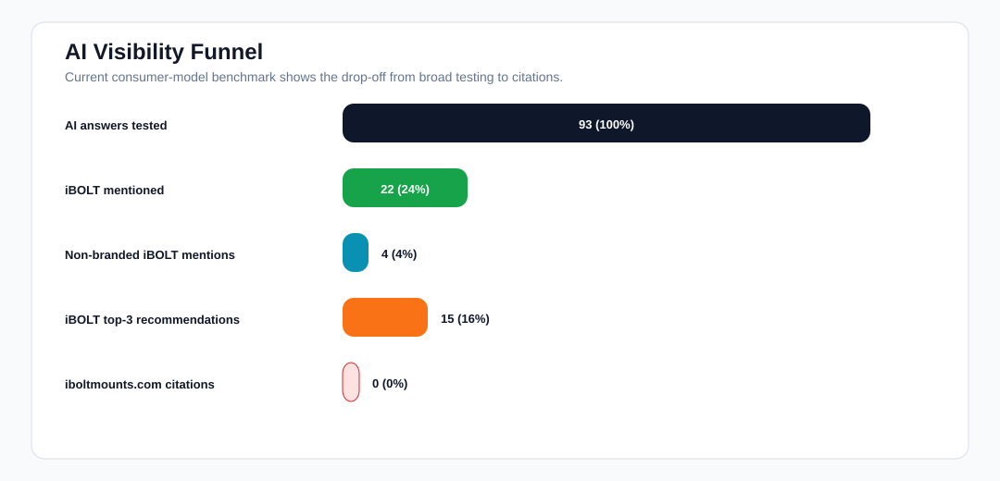
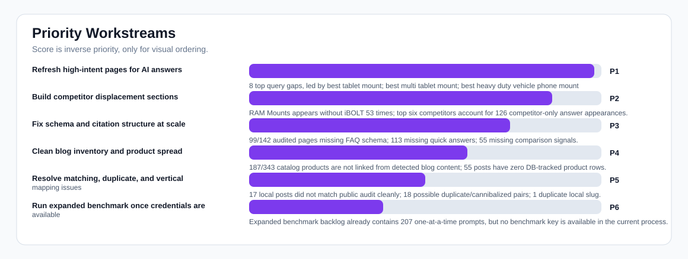
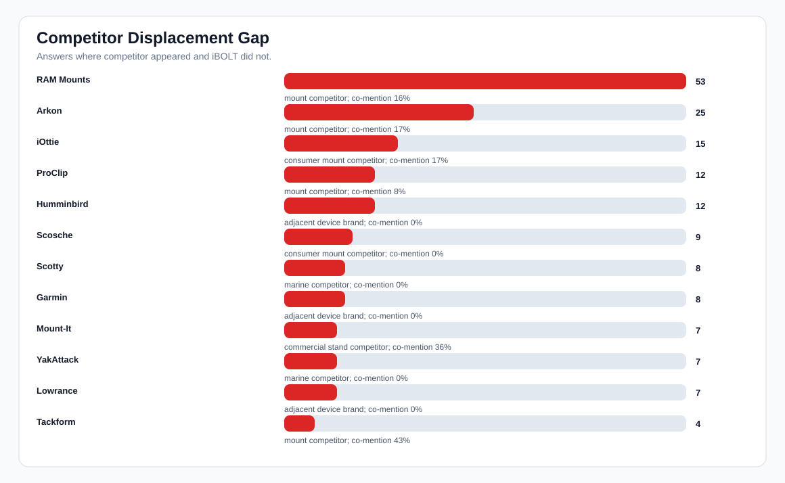
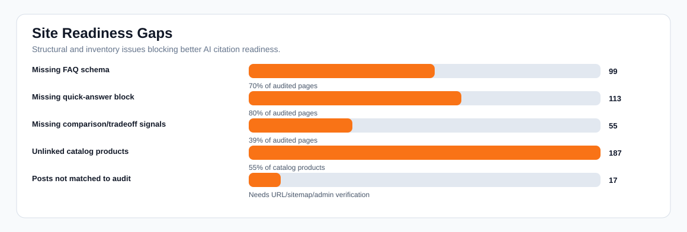

iBOLT AI Visibility Executive Rollup
Decision: the next work should focus on making existing high-intent pages citable and competitor-aware. iBOLT already has a meaningful content base, but broad buyer prompts still mention competitors without iBOLT, and most audited pages are missing FAQ schema or quick-answer blocks.
AI answers
93
consumer-model benchmark
Mention rate
24%
22/93 answers
Non-branded mention
5%
4/75 answers
Top-3 rate
16%
15/93 answers
Citation rate
0%
0/93 answers
Blog pages audited
142
75/100 avg score
Local posts
106
89 matched to audit
Products linked
156/343
55% unlinked
Charts




Priority Workstreams
| Priority | Workstream | Action | Evidence files |
|---|---|---|---|
| 1 | Refresh high-intent pages for AI answers 8 top query gaps, led by best tablet mount; best multi tablet mount; best heavy duty vehicle phone mount | Add query-exact quick answers, FAQ schema, product-specific comparison blocks, and clearer recommended product sections. | query-opportunity-matrix.csv; page-refresh-queue.csv |
| 2 | Build competitor displacement sections RAM Mounts appears without iBOLT 53 times; top six competitors account for 126 competitor-only answer appearances. | Add honest comparison/tradeoff blocks against RAM, Arkon, iOttie, ProClip, Mount-It, and marine brands on matching pages. | competitor-battlecards.csv |
| 3 | Fix schema and citation structure at scale 99/142 audited pages missing FAQ schema; 113 missing quick answers; 55 missing comparison signals. | Patch generated HTML/template output and refresh existing pages in batches. | live-blog-page-audit.merged.csv |
| 4 | Clean blog inventory and product spread 187/343 catalog products are not linked from detected blog content; 55 posts have zero DB-tracked product rows. | Use product-spread.csv to rotate underused products into relevant posts and backfill blog_post_products rows. | product-spread.csv; unlinked-product-opportunities.csv |
| 5 | Resolve matching, duplicate, and vertical mapping issues 17 local posts did not match public audit cleanly; 18 possible duplicate/cannibalized pairs; 1 duplicate local slug. | Verify Shopify handles, assign missing verticals, merge/redirect overlapping pages, and update local slug/article mappings. | post-inventory.csv; possible-duplicate-pages.csv |
| 6 | Run expanded benchmark once credentials are available Expanded benchmark backlog already contains 207 one-at-a-time prompts, but no benchmark key is available in the current process. | Set OPENROUTER_API_KEY in the environment and run scripts/run-expanded-openrouter-ai-benchmark.ts. | expanded-benchmark-prompts.csv |
Top Query Gaps
| Opp. | Prompt | Topic | AI score | Mention | Page score | Competitors |
|---|---|---|---|---|---|---|
| 97 | best tablet mount | tablet | 0 | 0% | 84 | RAM Mounts, Arkon, Tackform, Lamicall |
| 96 | best multi tablet mount | restaurant | 3 | 0% | 84 | RAM Mounts, Mount-It, Arkon |
| 96 | best heavy duty vehicle phone mount | fleet | 7 | 0% | 76 | RAM Mounts, Arkon, ProClip, Tackform |
| 94 | best phone mount for Amazon Flex and delivery vans | delivery | 7 | 0% | 84 | RAM Mounts, ProClip, Arkon, iOttie |
| 89 | best phone mount for Instacart and grocery delivery drivers | delivery | 0 | 0% | 76 | RAM Mounts, iOttie, Scosche, Peak Design |
| 88 | best phone mount for construction vehicles and work trucks | fleet | 3 | 0% | 76 | RAM Mounts, ProClip, Arkon, Tackform |
| 87 | best phone mount for delivery drivers | fleet | 0 | 0% | 83 | RAM Mounts, iOttie, Scosche, Belkin |
| 87 | commercial grade phone mount for delivery drivers | delivery | 0 | 0% | 83 | RAM Mounts, Arkon, iOttie, Scosche |
| 87 | best fish finder mount for small boat | fishing | 0 | 0% | 84 | RAM Mounts, YakAttack, Scotty, Humminbird |
| 87 | best fish finder | fishing | 0 | 0% | 84 | Garmin, Lowrance, Humminbird |
| 87 | best fish finder in water | fishing | 0 | 0% | 84 | Garmin, Lowrance, Humminbird |
| 86 | best kayak fish finder mount | fishing | 3 | 0% | 83 | RAM Mounts, YakAttack, Garmin, Lowrance |